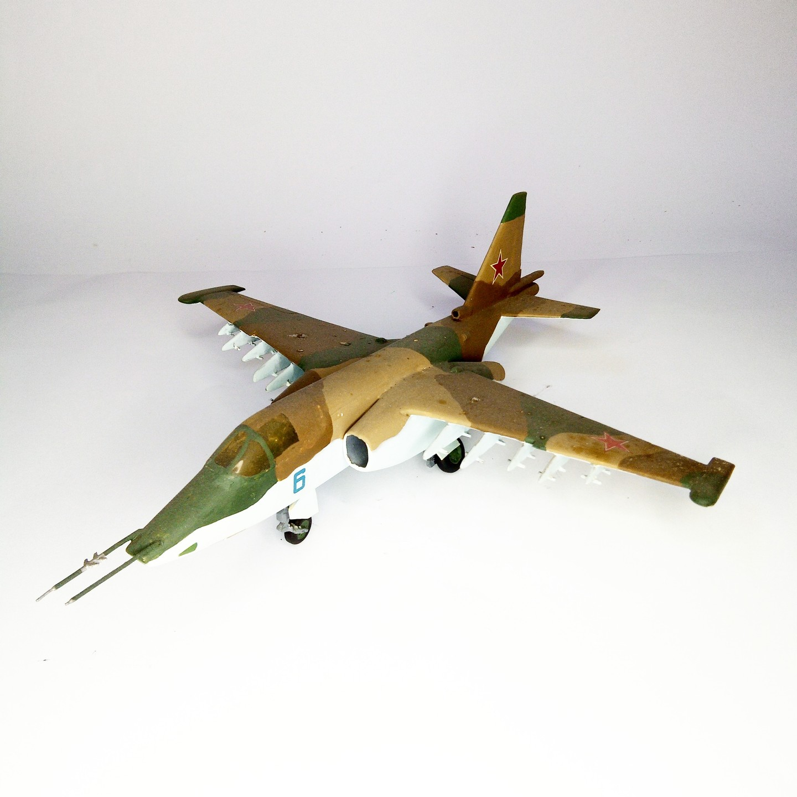

Aerei · scale model archive
Sukhoi Su 25 single seater
Sukhoi Su 25 single seater — Kit: Contrail. Scale; 1/48 #1/48 #Contrail

Photo gallery
English description
Scale; 1/48
#1/48 #Contrail
Aerei · scale model archive
Sukhoi Su 25 single seater — Kit: Contrail. Scale; 1/48 #1/48 #Contrail
